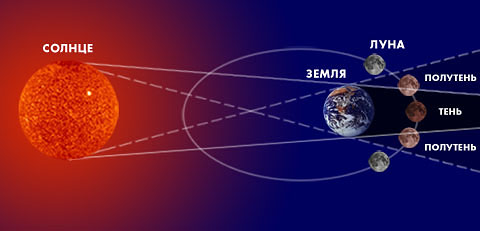

Причини, види та особливості затемнень Місяця
Місячні затемнення входять до числа надзвичайно цікавих явищ.
Спостерігати такі затемнення можна тоді, коли повний Місяць проходить через вузол його орбіти. А в цей момент Земля знаходиться точно між Сонцем та Місяцем, так що земна тінь покриває Місяць. Так як діаметр Землі більший від місячного в чотири рази, а тінь від Землі навіть на відстані від неї до Місяця більша у 2,5 рази від розмірів самого Місяця, тому Місяць може цілком зануритися у земну тінь. Під час затемнення Місяць не зникає взагалі, як Сонце під час сонячного, а буває лише слабше видимим.
Відбувається місячне затемнення так. Повний світлий круг Місяця починає темніти зі свого лівого боку, на місячному диску з’являється бура тінь, вона рухається далі і через годину охоплює весь Місяць.
Супутник Землі стає червоно-бурого, з кривавим відтінком, кольору. Трапляється це тому, що частина сонячного проміння проходить через атмосферу Землі, заломлюється в ній, входить у земну тінь і потрапляє на Місяць. Так як червоні промені спектра найменше розсіюються та ослаблюються в атмосфері, Місяць під час затемнення приймає мідно-червоний або бурий відтінок. Повне місячне затемнення триває набагато довше від сонячного, воно може продовжуватися 1 годину 40 хв. [3].
До місць, де можна побачити затемнення, збирають цілі експедиції.
Схема затемнення Місяця
